图文实录 · 小红书 · 徐贰懂
聊聊景深 什么样的虚化才美？
好看的虚化，是主体上的模糊斑小到认成一个点，背景上的圆斑大到把层次分开，而且焦外圆盘边缘柔。封面三句「光圈大、焦距长、离得近，景深就浅」只是口诀。图解里的 F 是光圈数值：F 变大，景深变深。口语里的「光圈大」对应孔径开大、F 变小。
1/14
景深可以算
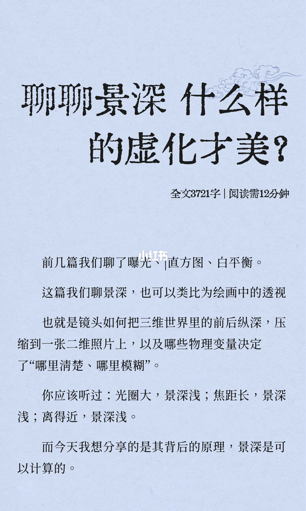
前几篇谈过曝光、直方图、白平衡。这篇把景深类比成绘画中的透视：镜头怎样把三维世界的前后纵深压进一张二维照片，哪些物理变量决定哪里清楚、哪里模糊。封面写着：光圈大，景深浅；焦距长，景深浅；离得近，景深浅。作者要讲的是背后可以计算的原理。页上标注全文 3721 字，阅读约 12 分钟。这一页没有光圈档位，也没有焦距毫米数。
和后文冲突的是「光圈大」。第 4 页把 F 定义成光圈数值，并写明它不是物理孔径直径。第 5 页箭头是 F 变大、景深变深。第 6 页写成：光圈开大（F 小）景深浅，光圈收小（F 值大）景深大。实录以后面的图解为准。封面的「光圈大」指的是孔径开大。
2/14
清楚，是圆斑小到认不出
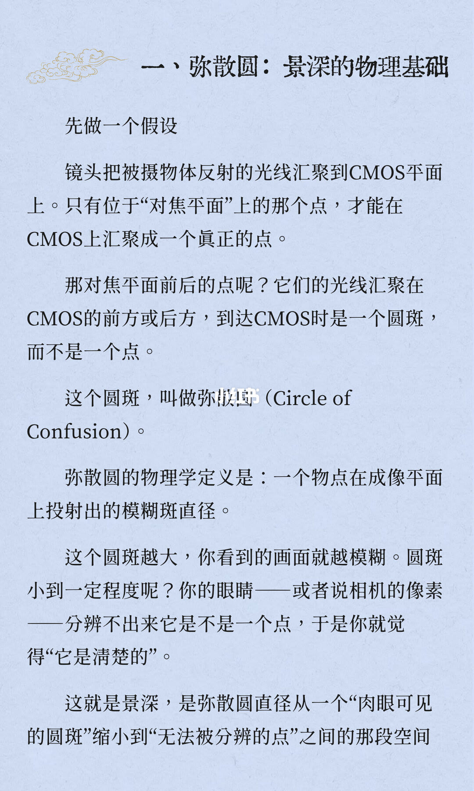
假设镜头把物体反射的光汇到 CMOS 平面。只有对焦平面上的那个点，才能在 CMOS 上汇成一个真正的点。对焦平面前后的点，光线汇在 CMOS 前方或后方，落到 CMOS 上是圆斑。这个圆斑叫弥散圆（Circle of Confusion）。物理学定义：一个物点在成像平面上投射出的模糊斑直径。
圆斑越大，画面越模糊。小到眼睛或相机像素分不出它是不是一个点，就会觉得清楚。景深就是弥散圆直径从「肉眼可见的圆斑」缩到「无法被分辨的点」之间的那段空间。句子在页末断开，第 3 页开头接的是「距离。」
3/14
前景点、背景点都变成圆
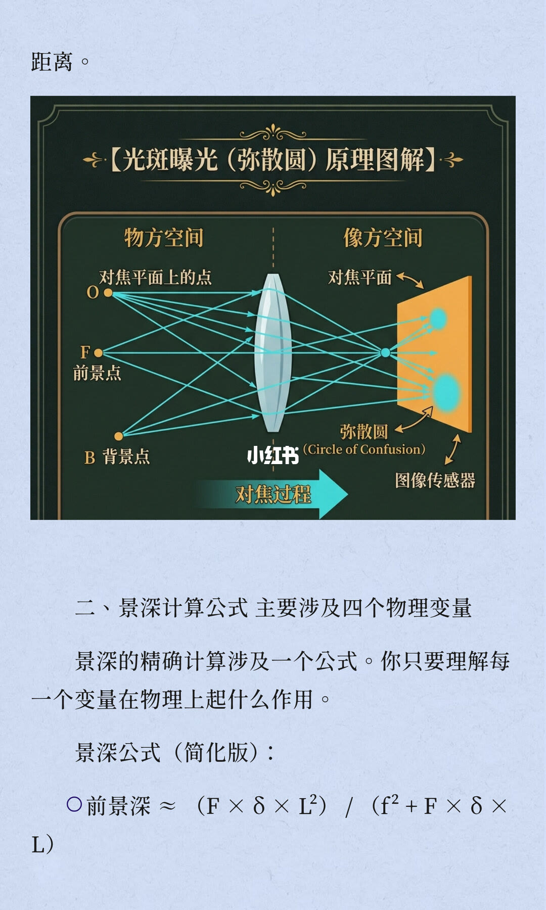
图题是「光斑曝光（弥散圆）原理图解」。物方有三个点：对焦平面上的点 O，前景点 F，背景点 B。像方是图像传感器。O 的光线在对焦平面上收成一点；F 和 B 在传感器上是弥散圆。底部箭头写着「对焦过程」。图上没有光圈数字和焦距。
下文进入景深公式，说精确计算涉及一个公式，只要理解每个变量在物理上起什么作用。简化版只给出前景深，约等于 (F × δ × L²) / (f² + F × δ × L)。四个字母在这一页还没有定义。读图时不要把图里的前景点 F 和公式里的 F 当成同一个东西。
4/14
后景深用减法，F 是数值
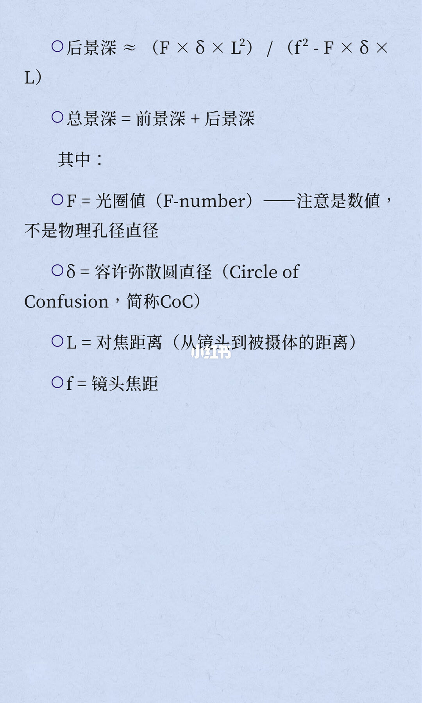
后景深约等于 (F × δ × L²) / (f² − F × δ × L)。总景深等于前景深加后景深。符号：F 是光圈值（F-number），注意是数值，不是物理孔径直径；δ 是容许弥散圆直径，简称 CoC；L 是对焦距离，从镜头到被摄体；f 是镜头焦距。
前景深分母是加法，后景深分母是减法。后景深会在分母接近零时变得很大，这一点第 6 页才展开。
5/14
四个变量各往哪边推
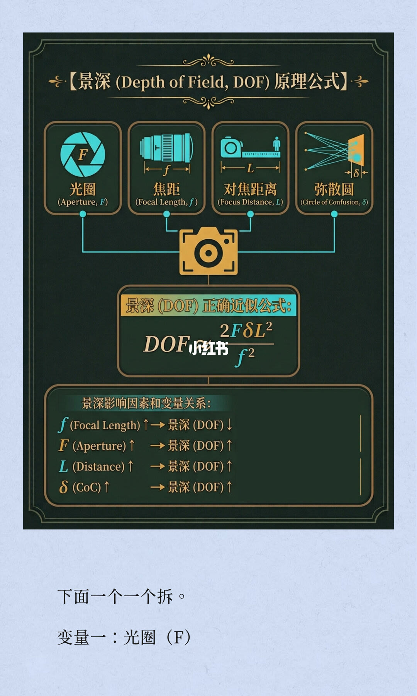
图把四个量送进景深：光圈 F、焦距 f、对焦距离 L、弥散圆 δ。中间写的正确近似公式是 DOF ≈ 2FδL² / f²。小红书水印压在公式中间，分子分母的字母仍能读清。下方关系：焦距 f 增大，景深变浅；光圈数值 F、对焦距离 L、容许弥散圆 δ 增大，景深都变深。页末开始拆第一个变量：光圈（F）。
这是把第 3、4 页前后景深加在一起之后的近似。F 在分子上，所以数值变大，景深变深。这和封面「光圈大则景深浅」用的不是同一个「大」。
6/14
收光圈会把后景深推向无穷
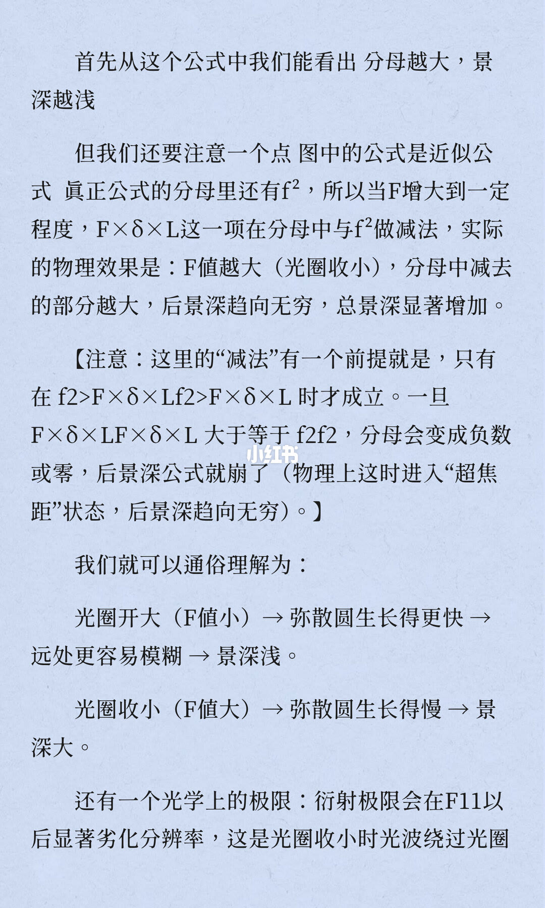
从近似公式能看出：分母越大，景深越浅。作者接着说图中公式是近似，真正公式的分母里还有 f²。F 增大到一定程度时，F × δ × L 这一项要和 f² 做减法。物理效果写成：F 值越大（光圈收小），分母里减去的部分越大，后景深趋向无穷，总景深显著增加。
减法有前提：只有 f² 大于 F × δ × L 时才成立。一旦 F × δ × L 大于等于 f²，分母变成负数或零，后景深公式就失效。作者把这时叫做超焦距，后景深趋向无穷。括号里同一串不等式有一段重复排版，重复进去的那几个符号无法逐字确认，能读清的是上面这个前提。
通俗两句：光圈开大（F 小），弥散圆长得更快，远处更容易模糊，景深浅。光圈收小（F 值大），弥散圆长得慢，景深大。光学极限写的是衍射：F11 以后分辨率显著变差，原因是光圈收小时，光波绕过光圈叶片边缘。作者说这一点前文提及过；本篇第 1 到第 5 页没有出现「衍射」。
7/14
距离减半，景深变成四分之一
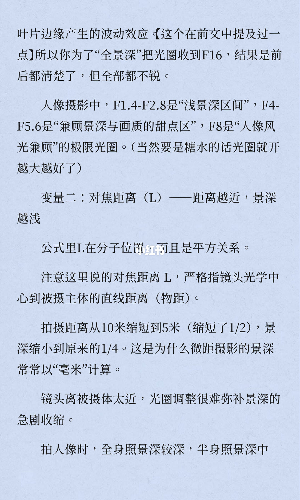
承接上一页：为了「全景深」把光圈收到 F16，前后都清楚了，但全部都不锐。人像区间写成：F1.4–F2.8 是浅景深区间，F4–F5.6 是兼顾景深与画质的甜点区，F8 是人像和风光兼顾的极限光圈。括号里写，若是糖水片，光圈就开得越大越好。
第二个变量是对焦距离 L：距离越近，景深越浅。公式里 L 在分子，而且是平方。这里的 L 严格指镜头光学中心到被摄主体的直线距离，也就是物距。拍摄距离从 10 米缩短到 5 米，缩短了一半，景深缩到原来的四分之一。微距的景深因此常常用毫米来算。镜头离主体太近时，拧光圈很难补回这种急剧收缩。人像景别写到一半：全身照景深较深，半身照景深中等，下页接特写。
8/14
同样构图时，焦距和对焦距离会抵消一部分
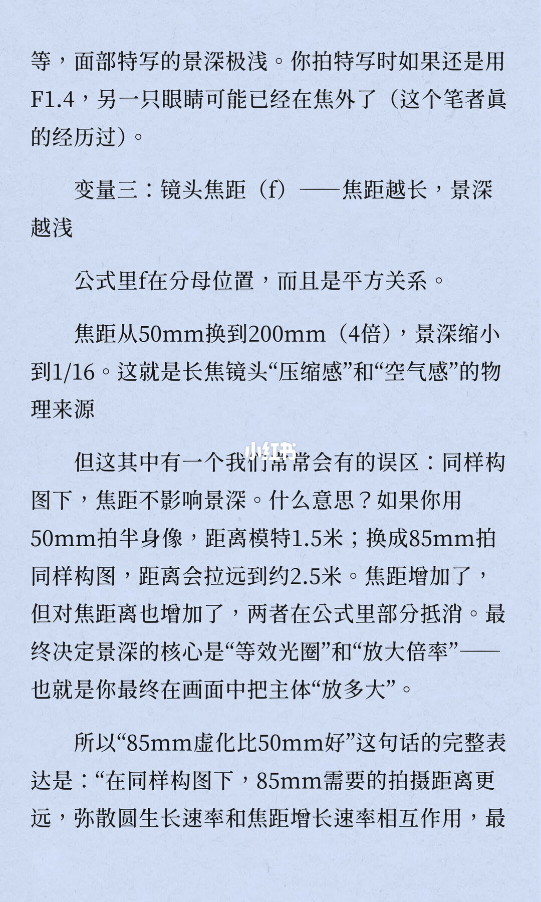
面部特写景深极浅。特写如果还用 F1.4，另一只眼睛可能已经在焦外。作者写自己遇到过。
第三个变量是焦距 f：焦距越长，景深越浅。f 在分母，而且是平方。焦距从 50mm 换到 200mm，变成 4 倍，景深缩小到十六分之一。作者把这写成是长焦「压缩感」和「空气感」的物理来源。
接着写一个常有的误区，原句是「同样构图下，焦距不影响景深」。例子：50mm 拍半身，距离模特 1.5 米；换成 85mm 拍同样构图，距离拉到约 2.5 米。焦距增加，对焦距离也增加，两者在公式里部分抵消。最终决定景深的核心被写成「等效光圈」和「放大倍率」，也就是主体在画面里被放多大。「85mm 虚化比 50mm 好」的完整说法在页末断开，下页把结论补上。误区那句和补上的结论并不一样，以第 9 页的完整表达为准。
9/14
画幅改的是「多大多算糊」
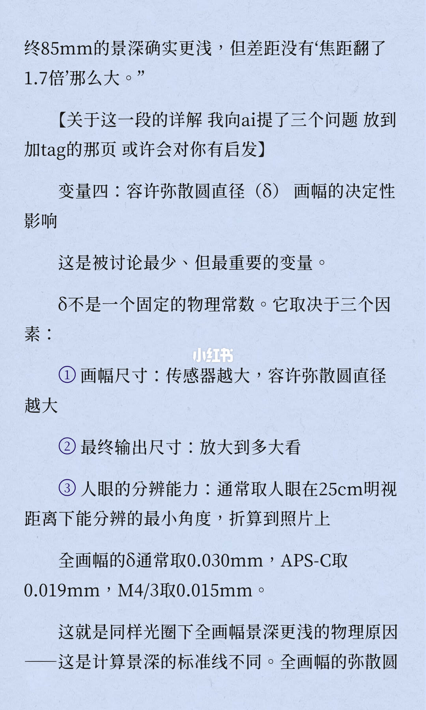
同样构图下，85mm 的景深确实更浅，但差距没有「焦距翻了 1.7 倍」那么大。作者说这一段向 AI 提了三个问题，放在加了 tag 的那一页。这十四页里没有那三个问题，内容无法确认。
第四个变量是容许弥散圆直径 δ，小标题写成画幅的决定性影响，并说它被讨论得最少，却最重要。δ 不是固定常数，取决于三件事：传感器越大，容许弥散圆越大；最终要放大到多大来看；人眼的分辨能力，通常取人眼在 25cm 明视距离下能分辨的最小角度，再折算到照片上。全画幅的 δ 通常取 0.030mm，APS-C 取 0.019mm，M4/3 取 0.015mm。同样光圈下全画幅景深更浅，是因为这条计算标准线不同。全画幅的弥散圆要长到下一页才说完。
10/14
先定景别，再谈虚化
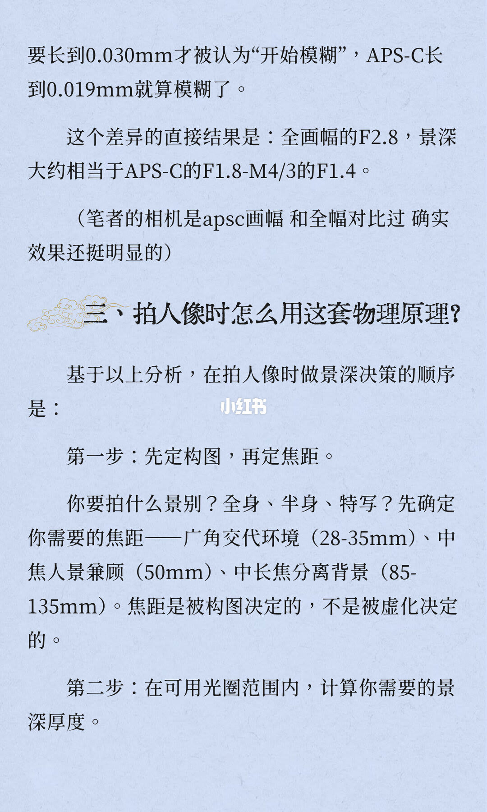
全画幅的模糊斑要长到 0.030mm 才被当成开始模糊，APS-C 长到 0.019mm 就算模糊。直接结果写成：全画幅的 F2.8，景深大约相当于 APS-C 的 F1.8、M4/3 的 F1.4。作者写自己的相机是 APS-C，和全画幅对比过，差别挺明显。页上没有给出这组换算的演算过程。
拍人像时用这套原理的顺序：第一步先定构图，再定焦距。先决定全身、半身还是特写。广角用来交代环境，写的是 28–35mm；中焦人景兼顾，写的是 50mm；中长焦用来分离背景，写的是 85–135mm。焦距由构图决定，不是由虚化决定。第二步才是在可用光圈范围内，计算需要的景深厚度。怎么算，在下一页。
11/14
单人、双人、环境人像各收多少
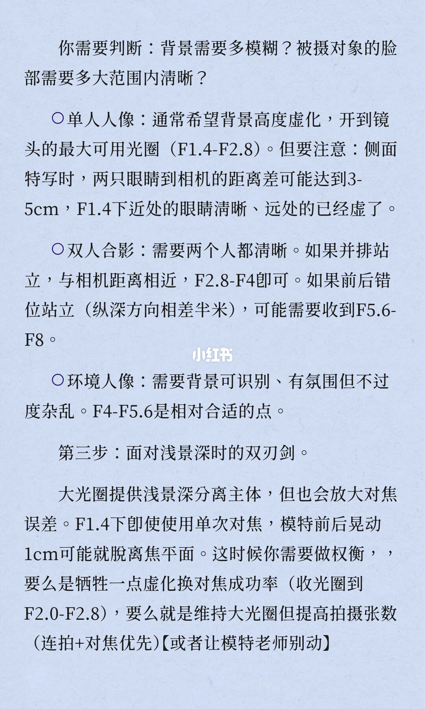
要先判断背景需要多模糊，以及脸上需要多大范围清楚。单人人像通常希望背景高度虚化，开到镜头最大可用光圈，写成 F1.4–F2.8。侧面特写时，两只眼睛到相机的距离差可能达到 3–5cm，F1.4 下近处的眼睛清楚，远处的已经虚了。双人合影要两个人都清楚：并排站、和相机距离相近，F2.8–F4 即可；前后错开、纵深相差半米，可能需要收到 F5.6–F8。环境人像要背景还能认出来，有氛围又不过分杂，F4–F5.6 被写成相对合适的点。
第三步写浅景深的另一面：大光圈把主体和背景分开，也放大对焦误差。F1.4 下即使用单次对焦，模特前后晃动 1cm，就可能离开焦平面。权衡写成两条：牺牲一点虚化，收到 F2.0–F2.8，换对焦成功率；或者维持大光圈，用连拍加对焦优先多拍几张。括号里还有一句：让模特别动。
12/14
圆斑大不大，和圆斑好不好看，是两件事
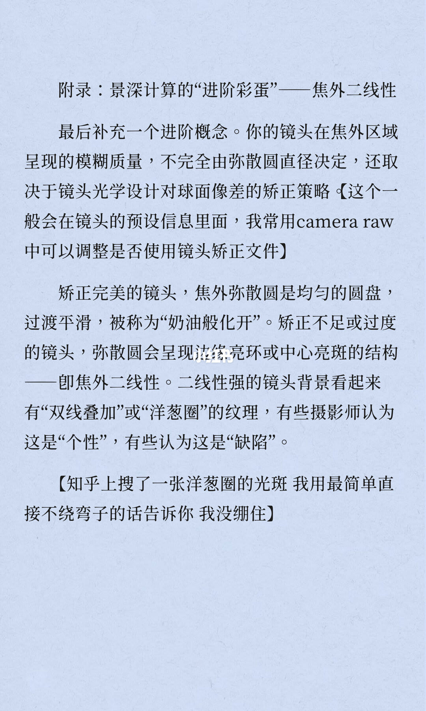
附录谈焦外二线性。焦外有多糊，不完全由弥散圆直径决定，还取决于镜头对球面像差的矫正策略。作者说这一般在镜头预设信息里，自己常用 Camera Raw 里是否使用镜头矫正文件来看。
矫正得很完整的镜头，焦外弥散圆是均匀圆盘，过渡平滑，被称作「奶油般化开」。矫正不足或过度时，弥散圆会变成边缘亮环或中心亮斑，也就是焦外二线性。二线性强的镜头，背景看起来有「双线叠加」或「洋葱圈」纹理。有的摄影师当成个性，有的当成缺陷。作者说在知乎上搜到一张洋葱圈光斑，自己没绷住。那张图在下一页，本页没有光圈和焦距数字。
13/14
人像镜头常把像差留一点
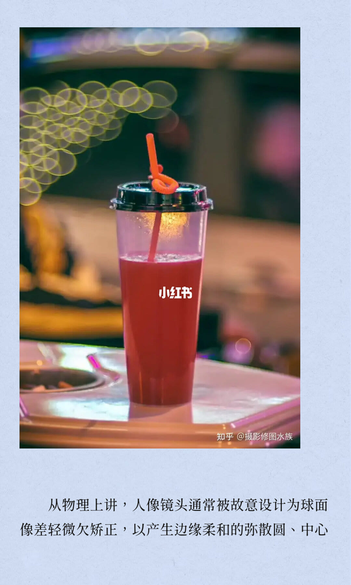
页上是一张带圆形光斑的示例照片，水印为知乎 @摄影修图水族。上一页说这是洋葱圈光斑。光斑里有没有双线或洋葱圈结构，这张图上看不清，无法确认。
配文从物理上讲：人像镜头通常被故意设计成球面像差轻微欠矫正，用来做出边缘柔和的弥散圆，中心则接到下一页。
14/14
四个变量一起决定景深
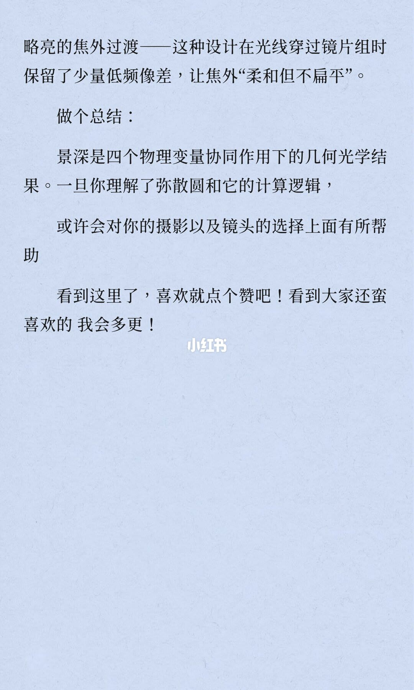
上一页的句子收束为：中心略亮的焦外过渡。这种设计在光线穿过镜片组时保留少量低频像差，让焦外「柔和但不扁平」。
总结句：景深是四个物理变量一起作用下的几何光学结果。理解了弥散圆和它的计算逻辑，或许对拍照和选镜头有帮助。结尾是求赞，并说还会再更新。这一页没有新的光圈或焦距数字。
汇总
虚化美在圆斑的大小，也在圆斑的边缘
结论：主体要落在「圆斑小到认成点」的那段距离里，背景的圆斑要大到能分开层次，焦外圆盘最好是柔边。封面的「光圈大」和第 4–6 页的 F 数值方向相反，以图为准：孔径开大等于 F 变小，景深变浅。
支撑：第 2–5 页定义弥散圆和四个变量；第 6–9 页给出光圈、物距、焦距、画幅各自把景深往哪边推；第 10–11 页是人像上的用法；第 12–14 页把「糊得厉害」和「糊得好看」拆开。
边界：向 AI 提的三个问题不在这十四页里。第 6 页括号中的不等式有重复排版。第 10 页的画幅光圈对照没有演算。第 13 页光斑是否为洋葱圈无法确认。衍射被写成前文提过，第 1–5 页没有这个词。公式都是近似，笔记没有代入一组实测距离做验算。